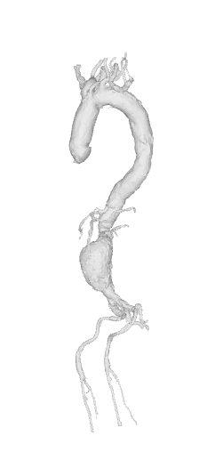
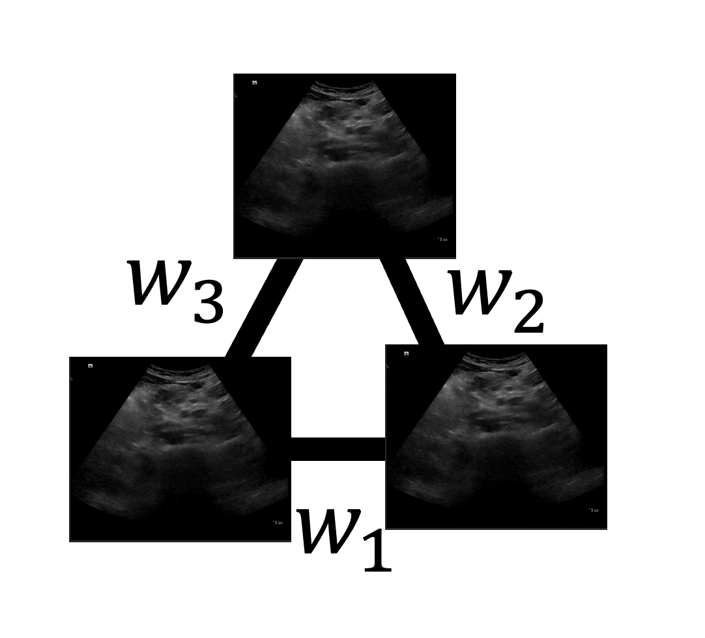

Introduction
This project aims to develop an automated robotic ultrasound system to accurately measure the volume of the aorta, to help diagnose aortic aneurysms using Ultrasound.

CT scan of aorta with aneurysm
Already given is an Ultrasound segmentation model known as CACTUSS. The goal was to
compound different slice segmenations along the aorta to create a 3D volume of the whole aorta.
We first try to get the ground truth ultrasound aortas, using a simple button control scheme that captures the aorta only during the exhale phase.
We then compare it to more experimental approaches using spectral embedding applied to all breathing phases and compare the volumes.
Results
Ground truth compounded results of the aorta. The green line below the aorta corresponds to the breathing of the patient
For the spectral embedding we take an ultrasound sequence that contains one inhale and one exhale, and try to measure the breathing purely from the images of the
sequence:
Method
Button Control Pipeline
Spectral Embedding
In spectral embedding we generate graphs from the sequence of images.
Consider a graph with nodes and edges 𝐺 ∈ (𝑉, 𝐸) where:
- 𑉠correseponds to each image
- 𝐸 contains weights generated by the heat-kernel equation calculated by evaluating the sum of square distances:
- \begin{equation}
w_{ğ‘–ğ‘“}=w_{ğ‘“ğ‘–}=ğ‘’^{-\frac{‖ğ‘£_ğ‘–−ğ‘£_𑓠‖^2}{ 2ğœ^2 }}
\end{equation}
For example, assuming we take 3 consecutive frames, we get a graph with 3 nodes and 3 weights:

We only connect the L nearest neighbour images in the sequence and thus we're able to create a
graph adjacency matrix .
After calulating the Laplacian Matrix of the graph (𝐿=𝐷−𝐴), we can calculate the k smallest Eigenvector of Laplacian Matrix: 𝐿𝑓=𝜆𝑓
Intuitively what we're doing is reducing the dimensionality of the graph we constructed (in our case to one dimension). This we assume corresponds to the
breathing direction of the seqeunce of images.
We also reduce the noise of the Ultrasound images